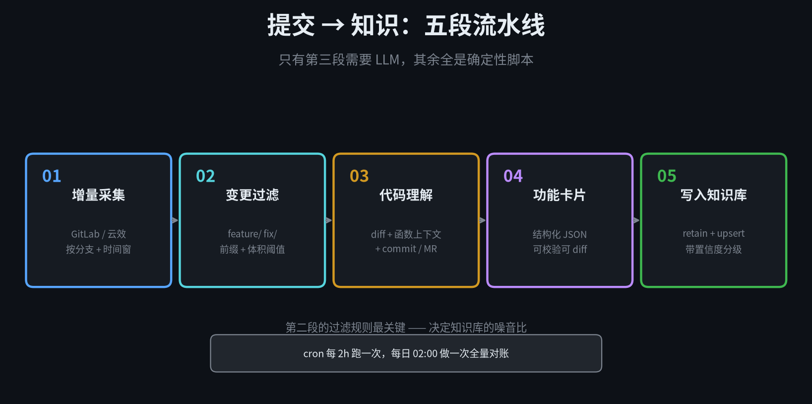
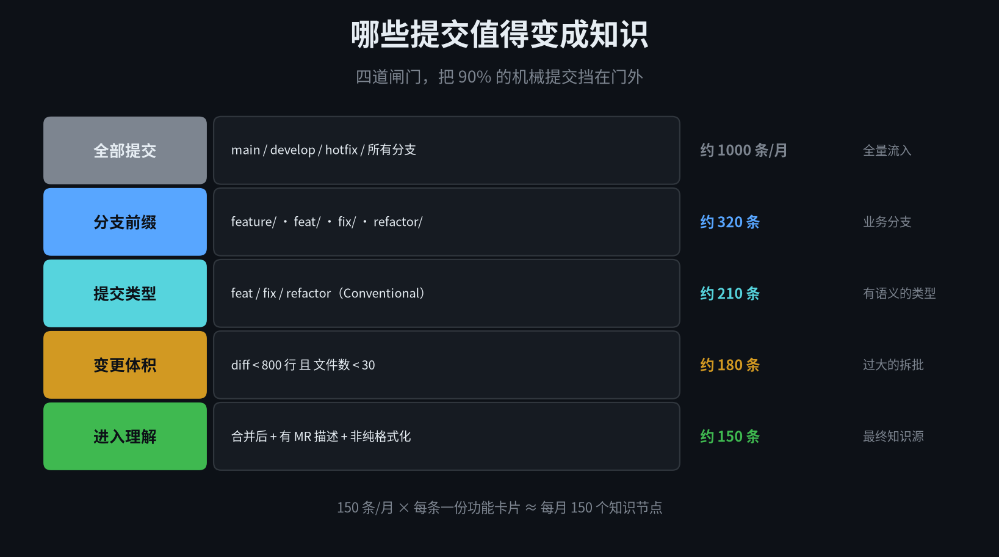
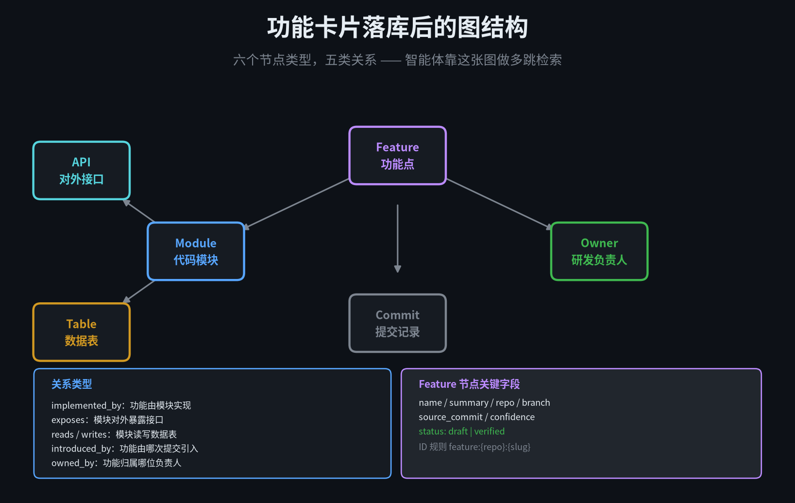
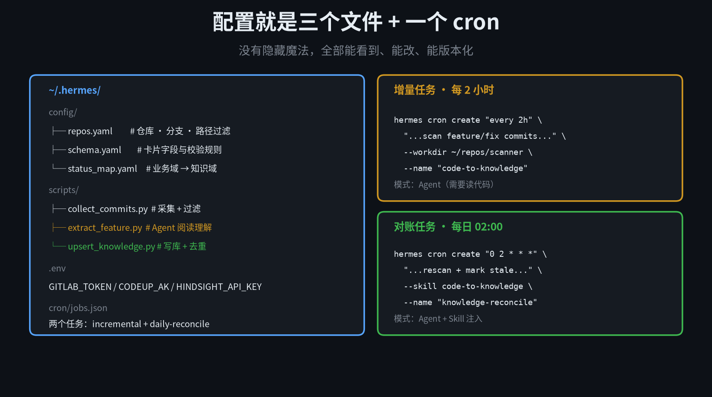

代码是唯一不说谎的文档
但它从来不可检索
每个公司都有这样一个场景：
· 新人问"分账功能是怎么实现的"，老员工说"你去看 payment-split 那个仓库"
· 智能体被问"退款流程涉及哪几张表"，它答不出来，因为它没读过代码
· 产品想知道"这个需求到底上线了没有"，只能去翻三个月前的 MR
· 文档写了三版，全过期了；代码只有一版，永远是对的
问题不在"没有文档"，在于代码里有全部事实，但没有一句是给人和智能体读的。
这篇讲的是：让 Hermes 的定时任务每天扫 GitLab / 云效的 feature、fix 分支，读懂这些提交改了什么，把"代码完成的功能"翻译成企业知识，写进知识库，供后面所有智能体检索。
关键词是"翻译"——不是把代码贴进向量库，那只是把检索难题换了个地方。
1
概念：为什么这一段必须让 Agent 来做
先把角色分清楚。这条链路里有三个执行者，能力边界完全不同：
Cron —— 负责"什么时候跑"。它不懂代码，只懂时间。
脚本 —— 负责"拿什么回来"。调 API、过滤分支、算 diff，全是确定性动作。
Agent —— 负责"这段代码到底做了什么"。这一步没有规则可写。
为什么第三步不能写死规则？因为"读懂代码"这件事的输入空间是无限的。同样一个 diff，可能是在修空指针，可能是在加一个业务分支，也可能只是把 `for` 改成 `stream`。只有模型能结合 commit message、函数名、调用链，判断这段改动在业务上意味着什么。
所以整条链路是混合的，不是纯 Agent

图 1 · 五段流水线：只有第三段烧 token
第 1、2、4、5 段都是纯 Python，跑一万次成本为零。只有第 3 段进 Agent。这个切分方式决定了整套系统能不能长期跑下去——如果每两小时都让模型重读一遍全仓库，账单会在第三周把你叫停。
两个 cron，两种节奏
增量任务，每 2 小时：只处理上次游标之后的新提交，通常一次 3–10 条，token 消耗可控。
对账任务，每天凌晨 2 点：全量重扫一遍，处理增量漏掉的提交（比如分支重置、强制推送），同时标记"代码已删除但知识还在"的失效节点。
增量保证新鲜度，对账保证一致性。只做增量会慢慢长歪，只做全量会破产。
2
采集：四道闸门决定知识库的噪音比
采集层做的事听起来很简单：调接口拿提交。但真正决定这套系统好不好的，是过滤。

图 2 · 四道闸门：1000 条/月 → 150 条进理解
GitLab：两个接口就够了
拉提交列表用 commits 接口，拉具体改动用 diff 接口。别用 compare——它一次比对整个区间，大分支很容易返回几百 MB。
# 提交列表（按分支 + 时间窗增量拉）
GET /api/v4/projects/:id/repository/commits
?ref_name=feature/split-payment
&since=2026-11-02T00:00:00Z
&per_page=100
# 单条提交的改动
GET /api/v4/projects/:id/repository/commits/:sha/diff
关键点：不要轮询全部分支。用 `ref_name` 精确指定，或者先调 `/repository/branches` 拿到分支列表，在本地按前缀过滤后再逐个拉。一个中型仓库动辄几百个分支，全扫一遍 API 就会限流。
云效 Codeup：结构类似，认证不同
云效走的是 OpenAPI，鉴权用 RAM 的 AK/SK 或者个人访问令牌，返回结构跟 GitLab 大体一致——提交列表 + 单提交文件变更。写一个 adapter 层把两边字段对齐，后面的逻辑就完全复用。
这也是为什么要"采集层只做搬运、不做转换"——两个平台的原始结构差异，全部在归一化层吃掉，Agent 看到的是统一的 diff 结构。
游标：增量靠一个文件就够了
# ~/.hermes/state/cursor/payment-service__feature-split.json
{"repo": "payment-service",
"branch": "feature/split-payment",
"last_sha": "a1b2c3d",
"last_run": "2026-11-03T09:12:00+08:00"}
每次拉完更新这个文件。注意一个坑：分支被 force push 后，last_sha 可能已经不在历史里了。所以不能只依赖游标，还要用 `since` 时间兜底——取"游标之后"和"过去 48 小时"的并集。
体积闸门的阈值
单次提交 diff 超过 800 行、或者改动文件超过 30 个，不进理解队列，改为写入一条"待人工拆分"的观测记录。
原因很实在：这种提交多半是"格式化整个仓库""升级依赖""拔出一棵大树"，喂给模型也总结不出一个有意义的功能点，反而会污染知识库。240 行以内的改动，功能语义最清晰。
还要再挡一类：纯注释、纯空白、纯重命名、lock 文件、生成代码。这些用路径和 diff 统计就能判断，连模型都不用调。
3
理解：别让模型读整个仓库
这是最容易做错的一步。常见的错误做法是：把整个仓库 clone 下来，索引进向量库，让 Agent 去搜。这不叫理解代码，这叫把 grep 换了个更贵的实现。
正确的输入是三样东西的组合
① 改动本身 —— diff 里的增删行，这是"变了什么"。
② 改动所在函数的完整上下文 —— 不是整个文件，是包含这段 diff 的函数或类。用 tree-sitter 解析 AST 就能拿到边界，一个函数通常 30–80 行。
③ 意图声明 —— commit message、MR 标题与描述、关联的需求单号。这是人写给"为什么改"的，模型最缺的就是这个。
三者拼起来，一次输入大约 2000–4000 token，成本可控，语义完整。实测比"给整个文件"的准确率高，因为噪音少；比"只给 diff"准确率高得多，因为有上下文。
Prompt 的写法：让它做"翻译"而不是"总结"
这两个动词差别很大。"总结这段代码"会得到一堆技术描述——"新增了一个 if 分支判断条件"。"翻译成业务能力"才会得到"支持按子商户维度拆分结算金额"。
你是企业知识编纂者。下面是一次代码提交。
请把它翻译成"系统获得了一项什么业务能力"，
而不是"代码做了什么修改"。
要求：
1. 用业务语言，假设读者是不写代码的产品/客服；
2. 如果只是重构、无新增能力，标记 type=refactor 并说明影响范围；
3. 输出严格 JSON，字段见 schema；
4. 不确定的字段留 null，不要编造接口名和数据表名。
最后那条"不要编造"非常重要。模型看见一个 `OrderService` 很自然会补出"订单服务"，但如果实际业务叫"交易单"，这条知识就是错的，而且会被后续检索反复引用。宁可字段为空，也不要幻觉出一个名字。
还有一个很实用的约束：让模型判 `is_business_meaningful`。如果这条提交是改日志级别、调超时时间、修拼写，它会自己说"没有业务语义"，直接跳过。省下的不只是 token，还有知识库的干净度。
4
编译：功能卡片长什么样
Agent 的输出必须结构化，而且要能被校验、被 diff、被幂等写入。一段自由文本没法做这三件事。
{
"id": "feature:payment-service:split-settlement",
"name": "按子商户拆分结算",
"summary": "一笔订单可按子商户维度拆成多笔结算记录，
各自独立计费与对账。",
"type": "feat",
"domain": "支付-结算",
"modules": ["payment-service/settlement"],
"apis": ["POST /api/v2/settlement/split"],
"tables": ["t_settlement", "t_settlement_item"],
"depends_on": ["feature:payment-service:merchant-account"],
"repo": "payment-service",
"branch": "feature/split-settlement",
"source_commit": "a1b2c3d",
"confidence": 0.87,
"status": "draft"
}
几个字段值得单独解释：
id —— 不是随机的，是 `feature:{repo}:{slug}`。这个稳定 ID 是做 upsert 的前提，同一个功能被多次提交迭代，应该更新同一条节点而不是新增十条。
depends_on —— 功能之间的依赖，这是让检索能做多跳的关键。没有它，知识库只是一堆平行的卡片。
confidence —— 模型对这次理解的把握程度。怎么来？不靠模型自评，靠三个客观信号加权：commit message 是否规范、MR 描述长度是否够、能否在已有知识里找到关联功能。
status —— draft 还是 verified。这是整套系统里最重要的一道保险，下一章细说。
置信度分级：不是所有知识都该被智能体引用
draft —— 刚生成，未经验证。智能体不主动引用，只存在待审队列。
reviewed —— 通过抽样人工复核，或者在知识库中与其他 verified 节点形成了稳定关联。
verified —— 被同事确认过，或者被多个独立来源交叉印证（代码 + 需求单 + 文档）。
默认策略：智能体检索只返回 verified；人工查询可以带出 draft 但必须标注"未验证"。这一条能挡掉 80% 的"AI 胡说八道"投诉——不是模型变准了，是错的那些根本没进检索池。
实际运维节奏：每周抽 10 条 draft 人工过一遍。看着不多，但一个月就是 40 条，三个月后知识库的主体就都是可信的了。
5
落库：图结构比向量库更合适
"把知识写进知识库"这句话，落到实现上有两种做法：向量库、图数据库。这个场景里，图更合适。
理由很直接：人问的往往是关系型问题——"退款走的哪张表""分账依赖哪些模块""这块谁负责"。向量检索擅长"这段话和我问的像不像"，不擅长"顺着边跳两跳"。

图 3 · 六个节点类型，五类关系
怎么接进 Hermes
Hermes 的记忆系统本身是 provider 化的，官方内置了若干后端（Hindsight 知识图谱、Mem0、本地文件等），也支持通过 MCP 桥接外部存储。写入侧用 `memory` 工具集的 retain 动作，读取侧是 recall / reflect。
如果你想用公司自己的 Neo4j，那就走 MCP——一个不到 200 行的 MCP Server，暴露三个工具：
memory_upsert(node_type, id, props) # 幂等写入
memory_link(from_id, rel, to_id) # 建关系边
memory_search(query, hops, status) # 多跳检索
Agent 侧只需要在 system prompt 里说明"你有一个 memory_upsert 工具，写完必须回读校验"，它就会在生成卡片后主动落库。不需要在 Hermes 里写死业务逻辑。
幂等：这条链路的生死线
每天跑两次、一次可能产出几十条，如果没有幂等，两个月后知识库里同一个功能会有十几个副本，检索出来的是一堆重复且互相矛盾的内容。
做法是把 upsert 写成"Cypher 的 MERGE + 字段合并"：
MERGE (f:Feature {id: $id})
SET f.name = $name,
f.summary = $summary,
f.source_commit = $sha, // 覆盖为最新
f.last_seen = datetime(),
f.status = CASE f.status
WHEN 'verified' THEN 'verified' // 已验证的不会被降级
ELSE $status END
注意那个 CASE：已经 verified 的节点不会被一次新的 draft 覆盖掉。否则人工审核等于白做——下一次自动跑就把状态打回原形了。
失效：知识也会过期
代码删了，知识还在，这是自动知识库最危险的地方——它比没有知识更糟，因为智能体会自信地引用一个已经不存在的接口。
对账任务里加一步：扫所有 verified 节点，检查它声明的 `modules` 和 `apis` 在最新代码里是否还能找到。找不到就置 `stale=true` 并降级为 draft，同时推一条提醒给 owner。
这一步每天只跑一次，全量扫一遍花不了几分钟，但能保证知识库不会慢慢变成一座废墟。
6
检索：智能体到底怎么用它
知识库建好之后，它是"共用底座"——同一个库，四种入口都能读：
聊天入口 —— 员工在企微/飞书问"分账怎么实现的"，Hermes 走 recall 检索。
MCP 入口 —— Cursor、Claude Code 这类编码工具，通过 MCP 直接读同一份图谱。
A2A 入口 —— 别的团队的 Agent 通过 Agent Card 发现并调用。
HTTP 入口 —— 内部门户、工单系统按需查询。
多跳的价值在哪
问"分账失败该找谁"，向量检索会返回一堆描述分账的段落。图谱检索走的是：
按子商户拆分结算 --owned_by--> 张工
--implemented_by--> settlement 模块
--reads--> t_settlement_item
--depends_on--> 商户账户体系
这四跳出来，答案就很具体：找张工，问题大概率在 t_settlement_item 写入或上游商户账户的余额校验。这是向量库给不了的精度。
还有一个隐藏好处：图谱天然可解释。你能告诉用户"我是从这三条边推出来的"，而不是"相似度 0.82"。在内部系统里，可解释比准确率更能建立信任。
7
配置与使用：三个文件 + 两个 cron

图 4 · 全部配置：三个 YAML + 一个 .env + 两个 cron
第一步：仓库清单
# ~/.hermes/config/repos.yaml
repos:
- name: payment-service
platform: gitlab
project_id: 1203
branches: ["feature/*", "fix/*"]
domain: 支付-结算
exclude_paths: ["**/*.lock", "docs/**", "**/generated/**"]
- name: order-center
platform: codeup
repo_id: "ord-88f2"
branches: ["feature/*", "hotfix/*"]
domain: 交易-订单
`domain` 这个字段很关键——它决定了卡片落到知识图谱的哪个区域。同一个仓库可能横跨多个业务域，后面做权限隔离和检索范围时都靠它。
第二步：环境变量
# ~/.hermes/.env
GITLAB_URL=https://gitlab.corp.com
GITLAB_TOKEN=glpat-xxxxxxxx
CODEUP_AK=LTAIxxxxxxxx
CODEUP_SK=xxxxxxxx
NEO4J_URI=bolt://neo4j.corp.com:7687
NEO4J_USER=knowledge
NEO4J_PASSWORD=xxxxxxxx
GitLab token 至少要 `read_api`；如果要读 MR 描述，还需要 `read_repository`。云效的 AK/SK 要开 Codeup 的只读权限。都不需要写权限——这条链路是单向的，只读代码，绝不回写。
第三步：挂两个 cron
# 增量：每 2 小时
hermes cron create "every 2h" \
"按 repos.yaml 扫描 feature/fix 分支的新提交，
逐条翻译成功能卡片，写入图谱，status=draft。" \
--skill code-to-knowledge \
--deliver local --name "code-to-knowledge"
# 对账：每日 02:00
hermes cron create "0 2 * * *" \
"全量重扫 + 标记失效节点 + 汇总当日新增知识。" \
--skill code-to-knowledge \
--deliver wecom --name "knowledge-reconcile"
注意两个任务的投递目标不同：增量任务 --deliver local，安静跑，只留审计日志；对账任务 --deliver wecom，每天给知识库管理员发一条"昨天新增 8 条、失效 2 条"的汇总。
第四步：先干跑，再上线
# 手动跑一次，不写库
hermes cron run code-to-knowledge --dry-run
# 只处理指定仓库，验证质量
hermes cron run code-to-knowledge --only payment-service --limit 5
第一周一定要 `--limit` 小批量跑，每天看十条结果，确认模型翻译得对不对。一次性把五百条灌进去，等你发现质量不行的时候，清理成本比重新做还高。
第五步：验证知识真的能被查到
别只看数据库里有多少节点，要看检索端能不能答出来。跑三个真实问题：
"分账功能涉及哪些接口和表？"
"退款流程依赖哪些模块？"
"结算这块最近谁在改？"
如果答不出，问题八成在前面三步：卡片 id 不稳定、关系边没建、或者检索时把 status 过滤设错了（只查 verified 但所有节点还是 draft）。
日常怎么用
· 每周一抽 10 条 draft 审核，通过的打 verified
· 每天看对账任务推来的汇总，重点关注 stale 数量
· 新人入职第一周，让他用这个知识库自学系统，收集答不出的问题，反向补采集范围
· 每季度做一次大清理，删掉长期无人检索、且 stale 的知识节点
这套东西的运维成本很低——每天大概十分钟。前提是前面几章的设计没有偷懒。
8
边界：这套方案做不到什么
① 它读不懂"没写出来"的东西。代码只能反映已实现的部分。业务规则、取舍原因、被砍掉的需求，代码里没有，知识库里也就没有。需要人工补，或者把需求单也接进来。
② 它对烂代码无能为力。命名混乱、逻辑嵌套十层的仓库，模型翻译出来的东西同样混乱。这时候先治代码，别指望知识库能变干净。
③ 单次提交的视野是有限的。一个横跨五个仓库的大功能，每条提交只能看到自己那一片。需要在"功能编排层"再做一次聚合——把同一次发版里、同一个需求号下的卡片合成一个完整功能。
④ 成本会随仓库规模线性上升。10 个仓库每月 150 条是可控的；100 个仓库就是 1500 条，模型调用和人工审核都扛不住。到那个量级，得按业务价值加权——只对 P0 业务域做全量，其余只做骨架。
⑤ 权限是最后的硬墙。代码库按项目隔离，知识库也得按域隔离。别做成一个大池子——否则 A 项目的人从智能体里查到 B 项目的接口设计，这是安全事故，不是效率提升。
最后说一句实话。
大部分公司做"代码知识库"失败，不是因为模型不够强，是因为一开始就想做全——所有仓库、所有分支、所有历史提交，一次性灌进去，然后期待它好用。
正确的做法反过来：先挑一个业务域、一个仓库、一条分支，让十个人用一个月。测到"新人真的靠它省了两周上手时间"，再扩。知识库是养出来的，不是灌出来的。
—— 系列第七篇，完 ——
往期回顾：
① Hermes 连接企微 & 飞书 · ② A2A + SDLC 六阶段 Pipeline
③ 企业知识库构建 · ④ WeKnora 活知识库
⑤ 业务群自动建单闭环 · ⑥ 定时任务每日项目简报